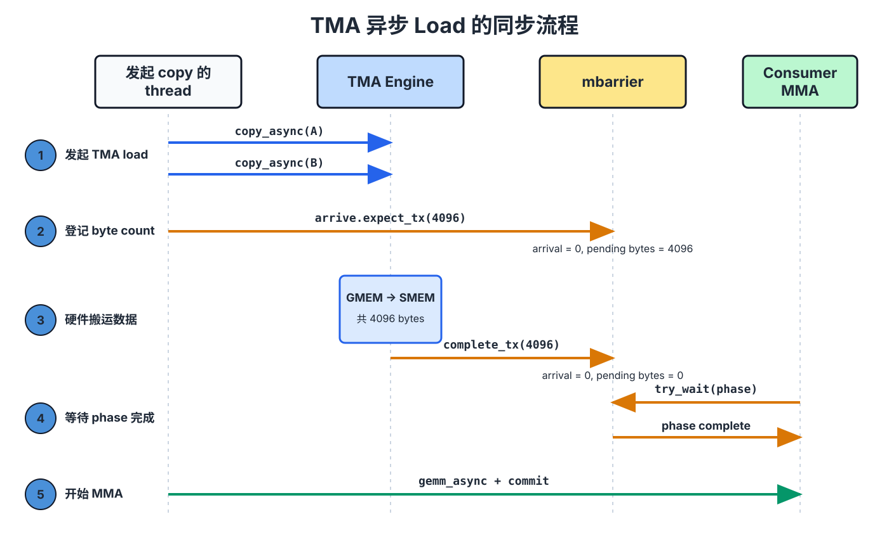

使用 TMA 为 GEMM 建立 Pipeline#
本章概览
基础 GEMM 让 copy 和 compute 依次执行，但两者本可以同时工作。
第 4 步改用 TMA async load；第 5 步建立双缓冲 SMEM；第 6 步加入 tile scheduler，将 kernel 改为 persistent kernel。
最终目标是在 Tensor Core 计算当前 tile 时，同时加载下一块 tile。
上一章的 tiled GEMM 已经能够得到正确结果，但 Tensor Core 在大部分时间里仍处于空闲状态。Kernel 让各阶段轮流执行：threads 把 tile 搬入 shared memory，Tensor Core 完成计算；随后 threads 再搬下一块 tile，Tensor Core 只能等待。加载下一块 tile 与计算当前 tile 使用不同的硬件，本可以同时进行，却被当前顺序串行化了。
这里不需要改变数据路径、tile layout 或数学计算，只需要改变工作何时发生，以及由谁调度。本章分三步完成这件事。第 4 步把大块 GMEM ↔ SMEM 搬运交给 TMA；第 5 步加入两级 software pipeline，使下一块 K tile 有独立的 SMEM stage 可以写入；第 6 步使用 tile scheduler 构建 persistent kernel，分摊每个 tile 的初始化开销，并选择更有利于 operand 复用的 tile 顺序。贯穿三步的新机制，是不同硬件单元之间的异步交接。
第 4 步：TMA Async Load#
第 1 至第 3 步中，CTA 的所有 threads 都要计算地址并发出 load/store 指令，只为了把 tiles 搬入 SMEM。这会占用本可用于其他工作的 instruction bandwidth。第 4 步用 TMA 替换同步 Tx.copy：一个 thread 提交命令，TMA engine 独立完成整个 tile 的传输。从这里开始，示例统一使用完整的 M=N=K=4096 规模；端到端时间会在 使用 Warp Specialization 和 Cluster 扩展 GEMM 末尾汇总。
这一步改变 Dispatch
Scope：不变，仍为一个 warpgroup。
Layout：不变，仍使用相同的 SMEM/TMEM/register tiles。
Dispatch：GMEM → SMEM load 从同步
Tx.copy改为 TMA engine。
如何发起 TMA#
虽然源代码只改了几行，但同步 copy 与 TMA 的执行模型不同。同步 Tx.copy 由 CTA 中的 threads 自己执行；TMA copy 则由一个 thread 发出命令，之后由 TMA hardware 完成数据搬运。下面对比两种写法。
修改前（第 3 步）：128 个 threads 共同参与 copy，随后由 cta_sync 保证 shared-memory writes 可见：
Tx.cta.copy(Asmem[:, :], A[m_st:m_st+BLK_M, i*BLK_K:(i+1)*BLK_K]) # all 128 threads
Tx.cta.copy(Bsmem[:, :], B[n_st:n_st+BLK_N, i*BLK_K:(i+1)*BLK_K])
T.cuda.cta_sync()
修改后（第 4 步）：一个 thread 发起 TMA load，mbarrier 跟踪硬件传输何时完成：
tid = warp_id * 32 + lane_id # 0..127 within the warpgroup
if tid == 0: # exactly one thread starts TMA
Tx.copy_async(Asmem, A[...], dispatch="tma")
Tx.copy_async(Bsmem, B[...], dispatch="tma")
T.ptx.mbarrier.arrive.expect_tx(tma_bar, byte_count) # bytes expected from TMA
T.ptx.mbarrier.try_wait(tma_bar, phase) # wait before MMA reads SMEM
这里使用 tid == 0，而不是 elect_sync()。elect.sync 会在每个 warp 中选出一个 active lane；一个 warpgroup 包含四个 warps，因此 elect_sync() 会让四个 threads 进入 load protocol。TMA load 需要向 mbarrier 登记一次预期 byte count；如果登记四次，计数会出错，wait 也无法按预期释放。使用 warpgroup-wide tid 选择唯一 thread 可以避免这个问题。
第 4 步仍会在每次 TMA load 后等待，因此还没有重叠 load 与 compute。这里的性能提升只来自数据搬运路径的改变：
Tx.copy使用 CTA threads 计算地址并发出 load/store 指令。tensor map descriptor 描述 tensor shape、strides、tile shape 和 swizzle mode；TMA engine 根据这些信息生成地址并搬运整个 tile。
即使每次 load 后仍然阻塞，TMA 也能减少 CTA threads 用于数据搬运的指令，因此这一版本仍会更快。
TMA Load 与 Store 的同步#
改用 TMA 后，不仅 copy 的发起者发生变化，完成通知也不同。Tx.cta.copy 由 CTA threads 协作执行，之后的 cta_sync() 足以确认完成。TMA 则由一个选出的 thread 执行 Tx.copy_async(..., dispatch="tma")，engine 按自己的进度完成传输，并通过 mbarrier 通知完成。
因此，cta_sync() 已经不够。它只等待 CTA 自己的 threads，并排序这些 threads 的 shared-memory writes，不会追踪仍在进行的 TMA transfer。TMA load 的 selected thread 需要先告诉 mbarrier 本轮预期多少 bytes，CTA 再等待这个 mbarrier；只有完成后，MMA 才能读取 SMEM tile。下图展示了这次交接：

图中，一个 selected thread 启动 TMA，mbarrier 记录预期 bytes，MMA 则在读取 SMEM 前等待 barrier 完成。图中的 “Elected Thread” 指负责启动 TMA 的 selected thread；在本节代码中，它是满足 tid == 0 的 thread，而不是通过 elect_sync() 选出的 lane。
完整 load path 如下：selected thread 发出两次 copy_async，再执行 arrive.expect_tx(total_bytes)，登记两块 tiles 的总 byte count。Engine 完成这些 bytes 的传输后，对应的 mbarrier.try_wait(phase) 才会通过，此时 SMEM tile 才能安全交给 MMA。
TMA store 使用另一套等待方式：load 通过 mbarrier 和 byte count 跟踪完成，store 则使用 commit group 和 wait group。Threads 将 fp16 结果写入 Dsmem 并完成同步后，一个 selected thread 启动 Tx.copy_async(D[...], Dsmem, dispatch="tma")，再依次执行 cp_async.bulk.commit_group() 和 cp_async.bulk.wait_group(0)，等待 store 完成。此前不能复用 Dsmem，否则会覆盖仍在传输的数据。
使用你的 agent 练习：追踪第 4 步中一个 K tile 的 load/store 同步。指出哪个 thread 启动每条 TMA 命令，哪个 mbarrier 或 commit group 跟踪完成状态，哪个 wait 保护 MMA 对 Asmem、Bsmem 的读取，以及哪个 wait 保护 Dsmem 的复用。为什么这里不能使用 elect_sync() 选择 TMA load 的发起者？
完整 Kernel#
完整 kernel 在第 3 步结构中加入 TMA load 和 store，其余部分保持不变。Imports 与前面相同：
import tvm
from tvm.script import tirx as T
from tvm.script.tirx import tile as Tx
from tvm.tirx.layout import TileLayout, S, TLane, TCol, tid_in_wg
from tvm.tirx.cuda.operator.tile_primitive.tma_utils import tma_shared_layout, SwizzleMode
这个版本封装为 hgemm_v4(M, N, K)。Wrapper 将依赖 shape 的 constants 和 layouts 与使用它们的 kernel 放在一起。
def hgemm_v4(M, N, K):
a_type = tvm.DataType("float16")
b_type = tvm.DataType("float16")
d_type = tvm.DataType("float16")
acc_type = tvm.DataType("float32")
BLK_M, BLK_N, BLK_K = 128, 128, 64
K_TILES = K // BLK_K
F16_SIZE = 2
A_layout = tma_shared_layout(a_type, SwizzleMode.SWIZZLE_128B_ATOM, (BLK_M, BLK_K))
B_layout = tma_shared_layout(b_type, SwizzleMode.SWIZZLE_128B_ATOM, (BLK_N, BLK_K))
D_layout = tma_shared_layout(d_type, SwizzleMode.SWIZZLE_128B_ATOM, (BLK_M, BLK_N))
@T.prim_func
def kernel(
A: T.Buffer((M, K), a_type),
B: T.Buffer((N, K), b_type),
D: T.Buffer((M, N), d_type),
):
T.device_entry()
bx, by = T.cta_id([M // BLK_M, N // BLK_N])
wg_id = T.warpgroup_id([1])
warp_id = T.warp_id_in_wg([4])
lane_id = T.lane_id([32])
# --- SMEM allocation (now includes Dsmem for TMA store) ---
pool = T.SMEMPool()
tmem_addr = pool.alloc((1,), "uint32")
tma_bar = pool.alloc((1,), "uint64", align=8)
mma_bar = pool.alloc((1,), "uint64", align=8)
pool.move_base_to(1024)
Asmem = pool.alloc((BLK_M, BLK_K), a_type, layout=A_layout)
Bsmem = pool.alloc((BLK_N, BLK_K), b_type, layout=B_layout)
Dsmem = pool.alloc((BLK_M, BLK_N), d_type, layout=D_layout)
pool.commit()
# --- Barrier + TMEM init ---
if warp_id == 0 and lane_id == 0:
T.ptx.mbarrier.init(mma_bar.ptr_to([0]), 1)
T.ptx.mbarrier.init(tma_bar.ptr_to([0]), 1)
if warp_id == 0:
T.ptx.tcgen05.alloc(T.address_of(tmem_addr), n_cols=512, cta_group=1)
T.ptx.fence.proxy_async("shared::cta")
T.ptx.fence.mbarrier_init()
T.cuda.cta_sync()
tmem = T.decl_buffer(
(128, 512), "float32", scope="tmem", allocated_addr=tmem_addr[0],
layout=TileLayout(S[(128, 512) : (1@TLane, 1@TCol)])
)
m_st = T.meta_var(bx * BLK_M)
n_st = T.meta_var(by * BLK_N)
phase_tma: T.int32 = 0
phase_mma: T.int32 = 0
# --- Inline helpers ---
@T.inline
def tma_load(k_st):
tma_config = T.meta_var({
"dispatch": "tma", "cta_group": 1,
"mbar": tma_bar.ptr_to([0])
})
Tx.copy_async(Asmem[:, :],
A[m_st : m_st + BLK_M, k_st : k_st + BLK_K],
**tma_config)
Tx.copy_async(Bsmem[:, :],
B[n_st : n_st + BLK_N, k_st : k_st + BLK_K],
**tma_config)
T.ptx.mbarrier.arrive.expect_tx(
tma_bar.ptr_to([0]),
(BLK_M * BLK_K + BLK_N * BLK_K) * F16_SIZE
)
@T.inline
def mma(accum):
Tx.gemm_async(
tmem[:, :BLK_N], Asmem[:, :], Bsmem[:, :],
accum=accum, dispatch="tcgen05", cta_group=1
)
T.ptx.tcgen05.commit(mma_bar.ptr_to([0]), cta_group=1)
# --- K-loop with TMA async ---
tid = T.meta_var(warp_id * 32 + lane_id)
for k in range(K_TILES):
k_st = T.meta_var(k * BLK_K)
# Single thread issues TMA load
if tid == 0:
tma_load(k_st)
# Wait for TMA to finish; the mbarrier release carries SMEM
# visibility to the subsequent MMA, so no extra fence is needed.
T.ptx.mbarrier.try_wait(tma_bar.ptr_to([0]), phase_tma)
# Single thread issues MMA
if tid == 0:
mma(accum=k != 0)
# Wait for MMA to finish
T.ptx.mbarrier.try_wait(mma_bar.ptr_to([0]), phase_mma)
phase_tma ^= 1
phase_mma ^= 1
# --- TMA Store Writeback ---
Dreg = T.alloc_local((BLK_N,), acc_type)
Dreg_f16 = T.alloc_local((BLK_N,), d_type)
Dreg_wg = Dreg.view(128, BLK_N,
layout=TileLayout(S[(128, BLK_N) : (1@tid_in_wg, 1)]))
# Read TMEM -> registers (async; wait.ld then cta_sync to ensure read completes)
Tx.wg.copy_async(Dreg_wg[:, :], tmem[:, :BLK_N])
T.ptx.tcgen05.wait.ld()
T.cuda.cta_sync()
# Cast fp32 -> fp16
Tx.cast(Dreg_f16[:], Dreg[:])
# Write registers -> Dsmem, flush, then sync
Tx.copy(Dsmem[warp_id * 32 + lane_id, 0:BLK_N], Dreg_f16[:])
T.ptx.fence.proxy_async("shared::cta")
T.cuda.warpgroup_sync(10)
# TMA store: Dsmem -> GMEM. One selected thread starts the store and drains the
# store group before Dsmem is reused.
if tid == 0:
Tx.copy_async(D[m_st : m_st + BLK_M, n_st : n_st + BLK_N],
Dsmem[:, :], dispatch="tma")
T.ptx.cp_async.bulk.commit_group()
T.ptx.cp_async.bulk.wait_group(0)
T.cuda.warpgroup_sync(10)
# --- Deallocate TMEM ---
T.cuda.cta_sync()
if warp_id == 0:
T.ptx.tcgen05.relinquish_alloc_permit(cta_group=1)
T.ptx.tcgen05.dealloc(tmem_addr[0], n_cols=512, cta_group=1)
return kernel
Kernel 中的 TMA 配置#
这个 kernel 的大部分结构来自第 3 步。真正决定 TMA 语义的是下面五处配置：
TMA config：
{"dispatch": "tma", "cta_group": 1, "mbar": tma_bar.ptr_to([0])}指定Tx.copy_async使用 TMA，并通过tma_bar报告 load 完成。Byte count：
(BLK_M * BLK_K + BLK_N * BLK_K) * 2是两块 fp16 operand tiles 的总 byte 数；arrive.expect_tx(...)将该数值登记到 mbarrier。mbarrier initialization：
init(tma_bar.ptr_to([0]), 1)初始化 TMA load 使用的 completion barrier。@T.inline：tma_load(...)和mma(...)是 helper functions，在编译时展开到 kernel body 中，并可使用外围 kernel 的变量。TMA store synchronization：epilogue 先将 fp16 rows 写入
Dsmem。fence.proxy_async和warpgroup_sync使这些由 threads 写入的 SMEM values 对 TMA store path 可见；随后通过commit_group()和wait_group(0)等待 SMEM → GMEM 传输完成。
至此，数据搬运路径已经正确，但执行顺序仍然是串行的：每次 load 完成后才会启动对应的 MMA，因此两个 engines 仍在轮流工作。下一步保持 TMA load/store path 不变，先为预取建立可以循环复用的 SMEM stages。
第 5 步：Software Pipeline（PIPE_DEPTH=2）#
第 4 步无法重叠 load 与 compute，原因在于 SMEM 中只有一对 operand tiles。下一次 load 没有独立位置可以写入；如果提前开始，就会覆盖当前 MMA 仍在读取的数据。第 5 步通过 shared memory 双缓冲解决这个存储冲突。当前单 warpgroup loop 仍会等待每次 MMA，再发起下一次 TMA load，但现在已经有独立 stages 可用于预取和循环复用。问题规模仍为 M=N=K=4096。
这一步改变 Layout
Scope：不变，仍为一个 warpgroup。
Layout：单个 SMEM tile pair 改为包含
PIPE_DEPTH个 stages 的 ring buffer。Dispatch：不变，仍使用 TMA load 和
tcgen05MMA。本步加入 prefetch 和 stage 复用；完整的 load/compute 重叠会在第 7 步实现。
Pipeline 执行过程#
当 PIPE_DEPTH=2 时，kernel 分配两个 SMEM stages，使 load path 和 MMA path 可以使用不同 slots。这是重叠数据搬运与计算的前提，但当前单 warpgroup kernel 仍会等待 MMA 完成，再发起下一次 TMA load。下图画出这组双缓冲最终要支持的目标调度；第 7 步将 TMA 和 MMA 分配给不同角色后，才会真正按这条时间线并发执行。

Pipeline 启动时，两次 TMA load 先填满两个 stages。之后，loop 等待当前 stage、执行 MMA，再把 k + PIPE_DEPTH 对应的 tile 加载到刚刚释放的位置。这样既建立了 ring buffer，也完成了最初两块数据的预取。
代码与第 4 步有四处不同：
Asmem和Bsmem增加前导PIPE_DEPTH维度，每个 stage 拥有独立 SMEM storage。tma_bar变为数组，每个 stage 对应一个 mbarrier。进入 main K-loop 前，kernel 预取最初两个 stages。
K-loop 使用
stage = k % PIPE_DEPTH：等待当前 stage，对其执行 MMA，再复用它加载k + PIPE_DEPTH。
Pipeline 机制#
1. Prefetch：main loop 开始前，先加载最初 PIPE_DEPTH 个 stages，使第一个 iteration 进入时已经有数据可用：
for s in range(min(PIPE_DEPTH, K_TILES)):
tma_load(s, s * BLK_K)
2. Main loop：对每个 K tile，先等待对应 stage 准备完成，再执行 MMA；该 stage 释放后，立即用它加载前方 PIPE_DEPTH 距离处的 tile：
stage = k % PIPE_DEPTH
wait(tma_bar[stage], phase_tma)
mma(stage, accum)
wait(mma_bar[0], phase_mma)
phase_mma ^= 1
tma_load(stage, next_k * BLK_K)
3. Phase 管理：前面的异步同步章节已经说明，同一个 mbarrier 每完成一轮，phase 就会翻转。这里的两个 phase 变量更新频率不同，是因为它们保护的资源数量不同。MMA accumulator 只有一个 TMEM slot，因此所有 iterations 都复用同一个 mma_bar（mma_bar.ptr_to([0])），phase_mma每轮都需要翻转。TMA 则为每个 stage 分配一个 barrier；同一个 stage 的 barrier 只有在 ring buffer 绕回时才会再次使用，因此phase_tma` 只在 stage index 完成一轮时翻转：
if stage == PIPE_DEPTH - 1:
phase_tma ^= 1
使用你的 agent 练习：取 PIPE_DEPTH=2、K_TILES=5，追踪 main loop。对每个 k，列出 stage、传给 waits 的 phase_tma 和 phase_mma，以及是否发起新的 prefetch。phase_tma 在哪里翻转？为什么最后两个 iterations 不会再 prefetch？
完整 Kernel#
完整 kernel 保留第 4 步的 TMA load/store path，并加入 staged buffers 和 phase logic。Imports 不变：
import tvm
from tvm.script import tirx as T
from tvm.script.tirx import tile as Tx
from tvm.tirx.layout import TileLayout, S, TLane, TCol, tid_in_wg
from tvm.tirx.cuda.operator.tile_primitive.tma_utils import tma_shared_layout, SwizzleMode
这个版本封装为 hgemm_v5(M, N, K)。PIPE_DEPTH=2 指定两个 pipeline stages，也就是双缓冲：
PIPE_DEPTH = 2
def hgemm_v5(M, N, K):
a_type = tvm.DataType("float16")
b_type = tvm.DataType("float16")
d_type = tvm.DataType("float16")
acc_type = tvm.DataType("float32")
F16_SIZE = 2
BLK_M, BLK_N, BLK_K = 128, 128, 64
K_TILES = K // BLK_K
# Double-buffered layouts: first dimension is pipeline stage
A_layout = tma_shared_layout(a_type, SwizzleMode.SWIZZLE_128B_ATOM,
(PIPE_DEPTH, BLK_M, BLK_K))
B_layout = tma_shared_layout(b_type, SwizzleMode.SWIZZLE_128B_ATOM,
(PIPE_DEPTH, BLK_N, BLK_K))
D_layout = tma_shared_layout(d_type, SwizzleMode.SWIZZLE_128B_ATOM,
(BLK_M, BLK_N))
@T.prim_func
def kernel(
A: T.Buffer((M, K), a_type),
B: T.Buffer((N, K), b_type),
D: T.Buffer((M, N), d_type),
):
T.device_entry()
bx, by = T.cta_id([M // BLK_M, N // BLK_N])
wg_id = T.warpgroup_id([1])
warp_id = T.warp_id_in_wg([4])
lane_id = T.lane_id([32])
# --- SMEM allocation ---
pool = T.SMEMPool()
tmem_addr = pool.alloc((1,), "uint32")
# Double-buffered TMA barriers (one per stage), single MMA barrier
tma_bar = pool.alloc((PIPE_DEPTH,), "uint64", align=8)
mma_bar = pool.alloc((1,), "uint64", align=8)
pool.move_base_to(1024)
Asmem = pool.alloc((PIPE_DEPTH, BLK_M, BLK_K), a_type, layout=A_layout)
Bsmem = pool.alloc((PIPE_DEPTH, BLK_N, BLK_K), b_type, layout=B_layout)
Dsmem = pool.alloc((BLK_M, BLK_N), d_type, layout=D_layout)
pool.commit()
# Initialize barriers: PIPE_DEPTH for TMA, 1 for MMA
if warp_id == 0:
if lane_id == 0:
T.ptx.mbarrier.init(mma_bar.ptr_to([0]), 1)
for s in range(PIPE_DEPTH):
T.ptx.mbarrier.init(tma_bar.ptr_to([s]), 1)
if warp_id == 0:
T.ptx.tcgen05.alloc(T.address_of(tmem_addr), n_cols=512, cta_group=1)
T.ptx.fence.proxy_async("shared::cta")
T.ptx.fence.mbarrier_init()
T.cuda.cta_sync()
tmem = T.decl_buffer(
(128, 512), acc_type, scope="tmem", allocated_addr=tmem_addr[0],
layout=TileLayout(S[(128, 512) : (1@TLane, 1@TCol)])
)
m_st = T.meta_var(bx * BLK_M)
n_st = T.meta_var(by * BLK_N)
phase_tma: T.int32 = 0
phase_mma: T.int32 = 0
@T.inline
def tma_load(stage, k_offset):
tma_config = T.meta_var({
"dispatch": "tma", "cta_group": 1,
"mbar": tma_bar.ptr_to([stage])
})
Tx.copy_async(Asmem[stage, :, :],
A[m_st:m_st+BLK_M, k_offset:k_offset+BLK_K],
**tma_config)
Tx.copy_async(Bsmem[stage, :, :],
B[n_st:n_st+BLK_N, k_offset:k_offset+BLK_K],
**tma_config)
T.ptx.mbarrier.arrive.expect_tx(
tma_bar.ptr_to([stage]),
(BLK_M * BLK_K + BLK_N * BLK_K) * F16_SIZE)
@T.inline
def mma(stage, accum):
Tx.gemm_async(tmem[:, :BLK_N], Asmem[stage, :, :], Bsmem[stage, :, :],
accum=accum, dispatch="tcgen05", cta_group=1)
T.ptx.tcgen05.commit(mma_bar.ptr_to([0]), cta_group=1)
tid = T.meta_var(warp_id * 32 + lane_id)
# === Prefetch: load first PIPE_DEPTH stages ===
if tid == 0:
for s in range(min(PIPE_DEPTH, K_TILES)):
tma_load(s, s * BLK_K)
# === Main loop ===
for k in range(K_TILES):
stage = k % PIPE_DEPTH
# Wait for TMA to finish loading this stage
T.ptx.mbarrier.try_wait(tma_bar.ptr_to([stage]), phase_tma)
# MMA on this stage's data
if tid == 0:
mma(stage, accum=(k != 0))
T.ptx.mbarrier.try_wait(mma_bar.ptr_to([0]), phase_mma)
phase_mma ^= 1
# Issue next prefetch load (k + PIPE_DEPTH)
next_k = k + PIPE_DEPTH
if next_k < K_TILES:
if tid == 0:
tma_load(stage, next_k * BLK_K)
# TMA phase flips when stage wraps around
if stage == PIPE_DEPTH - 1:
phase_tma ^= 1
# === TMA Store Writeback: TMEM -> RF -> Dsmem -> TMA -> GMEM ===
Dreg = T.alloc_local((BLK_N,), acc_type)
Dreg_f16 = T.alloc_local((BLK_N,), d_type)
Dreg_wg = Dreg.view(128, BLK_N,
layout=TileLayout(S[(128, BLK_N) : (1@tid_in_wg, 1)]))
Tx.wg.copy_async(Dreg_wg[:, :], tmem[:, :BLK_N])
T.ptx.tcgen05.wait.ld()
T.cuda.cta_sync()
Tx.cast(Dreg_f16[:], Dreg[:])
Tx.copy(Dsmem[warp_id * 32 + lane_id, 0:BLK_N], Dreg_f16[:])
T.ptx.fence.proxy_async("shared::cta")
T.cuda.warpgroup_sync(10)
if tid == 0:
Tx.copy_async(D[m_st : m_st + BLK_M, n_st : n_st + BLK_N],
Dsmem[:, :], dispatch="tma")
T.ptx.cp_async.bulk.commit_group()
T.ptx.cp_async.bulk.wait_group(0)
T.cuda.warpgroup_sync(10)
# Deallocate TMEM
T.cuda.cta_sync()
if warp_id == 0:
T.ptx.tcgen05.relinquish_alloc_permit(cta_group=1)
T.ptx.tcgen05.dealloc(tmem_addr[0], n_cols=512, cta_group=1)
return kernel
第 6 步：Persistent Kernel 与 Tile Scheduler#
前面的几步都在优化单个 output tile 内部的执行。第 6 步把关注点移到 tiles 之间的调度。
第 5 步为每个 \(128\times128\) output tile 启动一个 CTA。对于 \(4096\times4096\) 的输出，一共需要 1024 个 CTAs。每个 CTA 都要单独完成初始化，计算完一个 tile 后便退出。
Persistent kernel 则只启动固定数量的 CTAs，让每个 CTA 依次处理多个 tiles。这样做有两个好处：初始化开销可以分摊到多个 tiles 上；tile 的分配也转移到了 kernel 内部，scheduler 可以按有利于复用 operands 的顺序安排工作。问题规模仍为 M=N=K=4096。
这一步改变 Scope
Scope：固定数量的 persistent CTAs，每个 CTA 通过 scheduler 循环处理多个 output tiles。
Layout：不变，每个 tile 仍使用相同的 SMEM、TMEM 和 register 数据路径。
Dispatch：不变。
Persistent Scheduling#
Persistent kernel 的 grid 大小由硬件规模决定，而不是由 output tile 数量决定。这里启动 SM_COUNT 个 CTAs，目标是让每个 SM 大致对应一个长期运行的 CTA，并持续从 scheduler 获取工作。实际是否严格一一对应，还取决于 occupancy 和硬件调度。
本章以包含 148 个 SMs 的 B200 为例，因此取 SM_COUNT=148。这 148 个 CTAs 分别循环处理 ClusterPersistentScheduler2D 分配的 tiles。
首先，TMEM allocation、barrier initialization 和 scheduler state 只需为每个 persistent CTA 建立一次，随后可供它处理的多个 tiles 复用，不必由 1024 个短生命周期 CTAs 分别重复完成。
其次，scheduler 可以调整 tiles 的处理顺序。设置 l2_group_size=8 后，相邻 tiles 会被分到同一组：共享 row band 的 tiles 可以复用 A row tiles，共享 column band 的 tiles 可以复用 B tiles。连续处理这些 tiles，有助于让 operands 留在 L2 中，减少从 HBM 重复读取的数据量。这正是第 3 步尚未利用的跨 tile 复用。
bx = T.cta_id([SM_COUNT]) # 1D grid, one CTA per SM
tile_scheduler = ClusterPersistentScheduler2D(
"ts",
num_m_tiles=M // BLK_M,
num_n_tiles=N // BLK_N,
l2_group_size=8, # Group 8 nearby tiles together
num_clusters=SM_COUNT
)
tile_scheduler.init(bx)
循环处理多个 tiles 时，还要注意 barrier phase。当前示例固定使用 K=4096、BLK_K=64 和 PIPE_DEPTH=2：每个 output tile 包含 64 次 MMA，两个 TMA stage barriers 各被复用 32 次。因此一个 tile 结束后，相关 barriers 都恰好回到初始 parity，可以在下一轮把本地 phase variables 重新设为 0：
while tile_scheduler.valid():
phase_tma: T.int32 = 0
phase_mma: T.int32 = 0
...
这个重置依赖上述 iteration 次数。若修改 K、BLK_K 或 pipeline depth，使某个 barrier 在一个 output tile 内被使用奇数次，就不能直接重置为 0；kernel 必须保留上一块 tile 结束时的 parity，或者根据已执行的轮数计算下一次应等待的值。下面的 wrapper 用 assertion 限定当前实现支持的参数组合。
完整 Kernel#
从结构上看，这个 kernel 只是在第 5 步的 pipeline 外增加了一层 tile loop。新增的依赖只有 scheduler：
import tvm
from tvm.script import tirx as T
from tvm.script.tirx import tile as Tx
from tvm.tirx.layout import TileLayout, S, TLane, TCol, tid_in_wg
from tvm.tirx.cuda.operator.tile_primitive.tma_utils import tma_shared_layout, SwizzleMode
from tvm.tirx.lang.tile_scheduler import ClusterPersistentScheduler2D
Grid dimension 由 (M//BLK_M, N//BLK_N) 改为 SM_COUNT，每个 CTA 要处理的 tile 则由 ClusterPersistentScheduler2D 分配：
SM_COUNT = 148 # Number of SMs on NVIDIA B200 GPU
PIPE_DEPTH = 2
def hgemm_v6(M, N, K):
a_type = tvm.DataType("float16")
b_type = tvm.DataType("float16")
d_type = tvm.DataType("float16")
acc_type = tvm.DataType("float32")
F16_SIZE = 2
BLK_M, BLK_N, BLK_K = 128, 128, 64
assert K % BLK_K == 0, "K must be divisible by BLK_K"
K_TILES = K // BLK_K
assert K_TILES % (2 * PIPE_DEPTH) == 0, (
"K_TILES must be divisible by 2 * PIPE_DEPTH"
)
A_layout = tma_shared_layout(a_type, SwizzleMode.SWIZZLE_128B_ATOM,
(PIPE_DEPTH, BLK_M, BLK_K))
B_layout = tma_shared_layout(b_type, SwizzleMode.SWIZZLE_128B_ATOM,
(PIPE_DEPTH, BLK_N, BLK_K))
D_layout = tma_shared_layout(d_type, SwizzleMode.SWIZZLE_128B_ATOM,
(BLK_M, BLK_N))
@T.prim_func
def kernel(
A: T.Buffer((M, K), a_type),
B: T.Buffer((N, K), b_type),
D: T.Buffer((M, N), d_type),
):
T.device_entry()
# 1D grid: one CTA per SM (not a 2D grid anymore!)
bx = T.cta_id([SM_COUNT])
wg_id = T.warpgroup_id([1])
warp_id = T.warp_id_in_wg([4])
lane_id = T.lane_id([32])
# --- SMEM allocation (same as Step 5) ---
pool = T.SMEMPool()
tmem_addr = pool.alloc((1,), "uint32")
tma_bar = pool.alloc((PIPE_DEPTH,), "uint64", align=8)
mma_bar = pool.alloc((1,), "uint64", align=8)
pool.move_base_to(1024)
Asmem = pool.alloc((PIPE_DEPTH, BLK_M, BLK_K), a_type, layout=A_layout)
Bsmem = pool.alloc((PIPE_DEPTH, BLK_N, BLK_K), b_type, layout=B_layout)
Dsmem = pool.alloc((BLK_M, BLK_N), d_type, layout=D_layout)
pool.commit()
# --- Barrier + TMEM init (same as Step 5) ---
if warp_id == 0 and lane_id == 0:
T.ptx.mbarrier.init(mma_bar.ptr_to([0]), 1)
for s in range(PIPE_DEPTH):
T.ptx.mbarrier.init(tma_bar.ptr_to([s]), 1)
if warp_id == 0:
T.ptx.tcgen05.alloc(T.address_of(tmem_addr), n_cols=512, cta_group=1)
T.ptx.fence.proxy_async("shared::cta")
T.ptx.fence.mbarrier_init()
T.cuda.cta_sync()
tmem = T.decl_buffer(
(128, 512), acc_type, scope="tmem", allocated_addr=tmem_addr[0],
layout=TileLayout(S[(128, 512) : (1@TLane, 1@TCol)])
)
# Tile scheduler: assigns tiles to CTAs in L2-friendly order
tile_scheduler = ClusterPersistentScheduler2D(
"ts",
num_m_tiles=M // BLK_M,
num_n_tiles=N // BLK_N,
l2_group_size=8,
num_clusters=SM_COUNT
)
tile_scheduler.init(bx)
tid = T.meta_var(warp_id * 32 + lane_id)
@T.inline
def tma_load(stage, k_offset, m_st, n_st):
tma_config = T.meta_var({
"dispatch": "tma", "cta_group": 1,
"mbar": tma_bar.ptr_to([stage])
})
Tx.copy_async(Asmem[stage, :, :],
A[m_st:m_st+BLK_M, k_offset:k_offset+BLK_K],
**tma_config)
Tx.copy_async(Bsmem[stage, :, :],
B[n_st:n_st+BLK_N, k_offset:k_offset+BLK_K],
**tma_config)
T.ptx.mbarrier.arrive.expect_tx(
tma_bar.ptr_to([stage]),
(BLK_M * BLK_K + BLK_N * BLK_K) * F16_SIZE)
@T.inline
def mma(stage, accum):
Tx.gemm_async(tmem[:, :BLK_N], Asmem[stage, :, :], Bsmem[stage, :, :],
accum=accum, dispatch="tcgen05", cta_group=1)
T.ptx.tcgen05.commit(mma_bar.ptr_to([0]), cta_group=1)
# === Outer loop: iterate over tiles ===
while tile_scheduler.valid():
# Get current tile position from scheduler
m_st = T.meta_var(tile_scheduler.m_idx * BLK_M)
n_st = T.meta_var(tile_scheduler.n_idx * BLK_N)
# === Inner loop: same pipeline as Step 5 ===
phase_tma: T.int32 = 0
phase_mma: T.int32 = 0
# Prefetch first PIPE_DEPTH stages
if tid == 0:
for s in range(min(PIPE_DEPTH, K_TILES)):
tma_load(s, s * BLK_K, m_st, n_st)
# Main K-loop
for k in range(K_TILES):
stage = k % PIPE_DEPTH
T.ptx.mbarrier.try_wait(tma_bar.ptr_to([stage]), phase_tma)
if tid == 0:
mma(stage, accum=(k != 0))
T.ptx.mbarrier.try_wait(mma_bar.ptr_to([0]), phase_mma)
phase_mma ^= 1
next_k = k + PIPE_DEPTH
if next_k < K_TILES:
if tid == 0:
tma_load(stage, next_k * BLK_K, m_st, n_st)
if stage == PIPE_DEPTH - 1:
phase_tma ^= 1
# === TMA Store Writeback: TMEM -> RF -> Dsmem -> TMA -> GMEM ===
Dreg = T.alloc_local((BLK_N,), acc_type)
Dreg_f16 = T.alloc_local((BLK_N,), d_type)
Dreg_wg = Dreg.view(128, BLK_N,
layout=TileLayout(S[(128, BLK_N) : (1@tid_in_wg, 1)]))
Tx.wg.copy_async(Dreg_wg[:, :], tmem[:, :BLK_N])
T.ptx.tcgen05.wait.ld()
T.cuda.cta_sync()
Tx.cast(Dreg_f16[:], Dreg[:])
Tx.copy(Dsmem[warp_id * 32 + lane_id, 0:BLK_N], Dreg_f16[:])
T.ptx.fence.proxy_async("shared::cta")
T.cuda.warpgroup_sync(10)
if tid == 0:
Tx.copy_async(D[m_st : m_st + BLK_M, n_st : n_st + BLK_N],
Dsmem[:, :], dispatch="tma")
T.ptx.cp_async.bulk.commit_group()
T.ptx.cp_async.bulk.wait_group(0)
T.cuda.warpgroup_sync(10)
T.cuda.cta_sync()
tile_scheduler.next_tile() # Move to next tile
# Deallocate TMEM
T.cuda.cta_sync()
if warp_id == 0:
T.ptx.tcgen05.relinquish_alloc_permit(cta_group=1)
T.ptx.tcgen05.dealloc(tmem_addr[0], n_cols=512, cta_group=1)
return kernel
练习#
第 4 步中的
arrive.expect_tx使用(BLK_M * BLK_K + BLK_N * BLK_K) * 2bytes。如果这个 byte count 过小或过大，mbarrier 的等待会发生什么？第 5 步中，为什么每个 SMEM stage 都需要自己的 TMA barrier，而不能让两个 stages 共用一个
tma_bar？第 6 步中，
BLK_M=BLK_N=128时，一个 \(4096\times4096\) 输出包含多少个 output tiles？若SM_COUNT=148，每个 persistent CTA 平均处理多少个 tiles？